JDK8新特性:Lambda表達式、StreamAPI、Optional類
尚硅谷JavaSE筆記-30
Lambda表達式
可以簡略表達接口的匿名函數部份
- 用於
函數式接口，即只有一個抽象方法的接口- 因為當你使用這個接口就必定要實現這個唯一的方法，所以很多東西可以省略
結構
// 舉例
Comparator<Integer> com = (o1, o2) -> o1.compareTo(o2);
->:Lambda符號、箭頭符號- 左邊:Lambda形參列表，就是接口中抽象方法的形參列表
- 參數類型可以省略(類型推斷)
- 如果只有一個參數，可以省略
()括號
- 右邊:Lambda體，就是重寫的方法體，應該用
{}大括號包裹- 如果只有一行語句，可以省略
{}大括號- 如果省略
{}大括號也必須省略return
- 如果省略
- 如果只有一行語句，可以省略
應用
其實不用特別去記，IDEA寫出來他就會提示自動修改了
一.
// 無參無返回
Runnable r1 = new Runnable() {
@Override
public void run() {
System.out.println("hello");
}
};
// Lambda省略後
Runnable r1 = () -> System.out.println("hello");
二.
// 方法有一個形參，無返回
Consumer<String> stringConsumer = new Consumer<String>() {
@Override
public void accept(String s) {
System.out.println(s);
}
};
// Lambda省略後，左邊參數類型跟括號省掉了
Consumer<String> stringConsumer = s -> System.out.println(s);
三.
// 方法有兩個以上形參與一行返回值
Comparator<Integer> integerComparator = new Comparator<Integer>() {
@Override
public int compare(Integer o1, Integer o2) {
return o1.compareTo(o2);
}
};
// Lambda省略後，左邊參數類型、右邊大括號跟return都省略
Comparator<Integer> integerComparator = (o1, o2) -> o1.compareTo(o2);
// 還能繼續省，變成方法引用 ::
Comparator<Integer> integerComparator = Integer::compareTo;
四.
// 方法有兩個以上形參與多行返回值
Comparator<Integer> integerComparator = new Comparator<Integer>() {
@Override
public int compare(Integer o1, Integer o2) {
System.out.println(o1);
System.out.println(o2);
return o1.compareTo(o2);
}
};
// Lambda省略後，
Comparator<Integer> integerComparator = (o1, o2) -> {
System.out.println(o1);
System.out.println(o2);
return o1.compareTo(o2);
};
函數式接口
Functional，函數式
- 只有一個抽象方法的接口
- 為了將
函數作為物件看待，實現函數導向(OOF)所新增的特性 - Lambda表達式的本質就是做為函數式接口的實例
- 使用
@FunctionalInterface註解，可以協助檢查 - 在
java.util.function下定義了許多種類
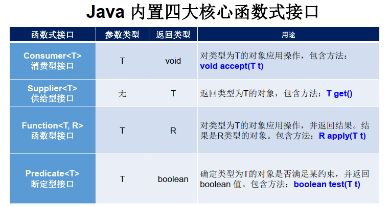
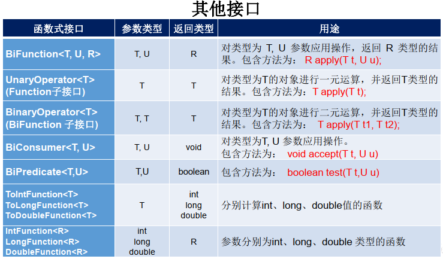
- 做為補充知識有印象即可，看到用這些寫的Lambda表達式不要嚇一跳
方法引用
Method References，方法引用
-
當Lambda體(->右邊)的操作已經有實現的方法了，可以用方法引用
-
前提:接口的抽象方法參數列表與返回值類型，和方法引用的參數列表與返回值類型一致
- 白話:箭頭左右的參數列表與返回值類型都相同
-
格式:使用
::將類或物件與方法名隔開，有三種主要格式:物件::實例方法名類::靜態方法名類::實例方法名，比較難看，將第一個參數看作調用者
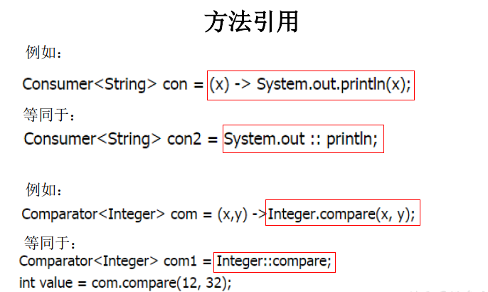
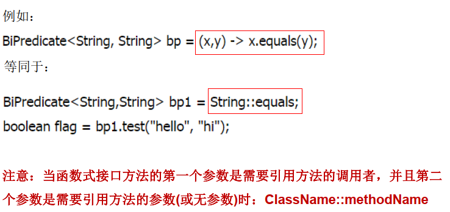
構造器引用
- 格式:
類名::new
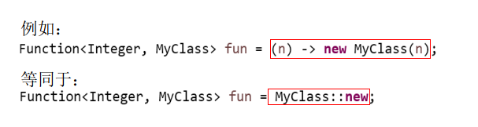
數組引用
- 格式:
數組類型::new
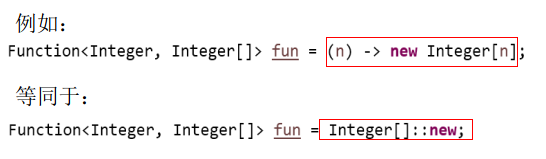
- 個人心得:也沒省多少，可讀性卻很差，還是少用吧
- 做為知識點，別人這樣寫時能看懂即可
Stream API
Collection集合是用來儲存數據；Stream是用來計算數據
有SQL語句使用經驗這邊就非常好理解
- 用於計算資料庫(例如:
Mysql、Oracle、MongDB、Radis等)數據 - 位於
java.util.stream - Stream本身不儲存數據
- Stream不改變源物件，而是返回一個持有結果的新
Stream - Stream的操作是延遲的，需要結果時才執行
Stream的操作三步驟
- 創建Stream:一個數據源(例如集合、數組)獲取一個流
- 中間操作:準備進行各種計算的流水線
- 終端操作:表示確定要計算了，執行中間操作的計算並得出結果，之後不再被使用
創建Stream
-
Collection接口的方法-
default Stream<E> stream():返回一個順序流 -
default Stream<E> parallelStream():返回一個並行流
-
-
Arrays數組的靜態方法static <T> Stream<T> stream(T[] array):返回一個流
-
Stream本身的of()方法public static<T> Stream<T> of(T... values):返回一個流
-
Stream本身的靜態方法，無限流public static<T> Stream<T> iterate(final T seed, final UnaryOperator<T> f):疊代public static<T> Stream<T> generate(Supplier<T> s):生成
範例
// Collection
List<Employee> list = new ArrayList<>();
Stream<Employee> stream1 = list.stream();
Stream<Employee> stream2 = list.parallelStream();
// Arrays.stream
int[] arr = new int[]{1, 2, 3, 4, 5};
IntStream stream3 = Arrays.stream(arr);
// Stream.of方法
Stream<Integer> integerStream = Stream.of(1, 2, 3, 4, 5);
// 無限流，常用於造出某些條件的數組
// 疊代遍歷前10個偶數
Stream.iterate(0, t -> t + 2).limit(10).forEach(System.out::println);
// 生成10個隨機數
Stream.generate(Math::random).limit(10).forEach(System.out::println);
中間操作
Lazy Evaluation惰性求值、惰性計算，也稱為call-by-need，
即真正要用的時候才計算，優勢:省空間複雜度
篩選與切片
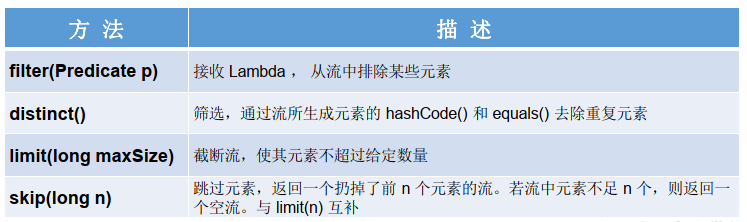
映射(從key找value)
最常用的操作
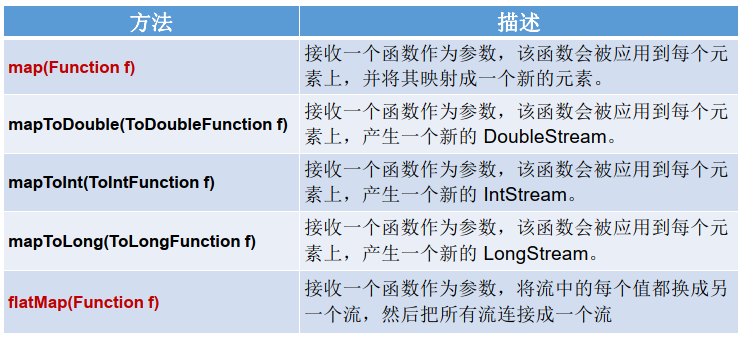
// map範例
Employee e1 = new Employee("張三", 40, new MyDate(1990, 6, 8));
Employee e2 = new Employee("李四端", 42, new MyDate(1990, 10, 6));
Employee e3 = new Employee("王武", 50, new MyDate(1990, 12, 2));
Employee e4 = new Employee("孫六七", 46, new MyDate(1990, 3, 1));
List<Employee> list = new ArrayList<>();
list.add(e1);
list.add(e2);
list.add(e3);
list.add(e4);
// 用map取出employee中的name做為新的stringStream
Stream<String> stringStream = list.stream().map(employee -> employee.getName());
stringStream.filter(s -> s.length() >= 3).forEach(System.out::println);
flatMap:把流中每個元素拆開裝到一個新的流，而不是在流中插入"做為一個元素的一整個流"- 就像講集合的時候，兩個數組合併，
add跟addAll方法的區別
- 就像講集合的時候，兩個數組合併，
排序
老樣的，自訂類需要先實現Comparable
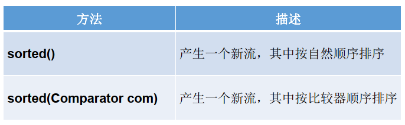
終端操作
使排定的中間操作真正開始計算並產生結果
- 結果可以不是任何流的值，甚至可以是
void - 流被終端操作後就不能再次使用
匹配與查找
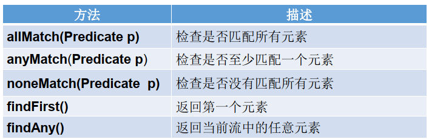
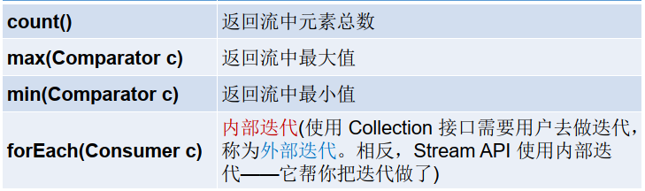
- 注意
noneMatch返回的為"是否沒有" findXXX方法返回的是Optional類，這個後面講count方法返回的是long，操作資料庫絕大部分數字都是longmax跟min方法需要比較，老樣的- 內部疊代:直接
stream1.foreach
歸約
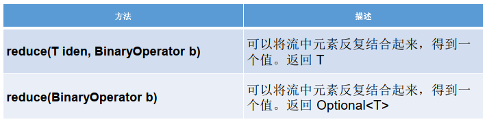
// 範例1
List<Integer> arr2 = Arrays.asList(1, 2, 3, 4, 5);
// iden=初始值
System.out.println(arr2.stream().reduce(0, (Integer a, Integer b) -> {
return Integer.sum(a, b); // 故意把方法引用拆開看BinaryOperator接口
}));
// map-reduce，例如求員工的年齡總和
System.out.println(list.stream().map(employee -> employee.getAge()).reduce(Integer::sum));
map-reduce為常用的操作，聞名於google的歸檔操作- 有點像投開票，各地遵守同樣的開票規則負責統計自己的票箱，再回報給中選會，中選會統整起來就是全國開票結果
- 廣泛應用於雲端的分散式運算技術，例如
Hadoop
收集
把Stream流轉回Collection集合
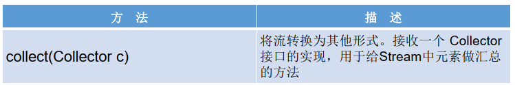
- Stream是用來計算，本身是沒有儲存功能的，所以可能需要轉回集合
- Collectors工具類提供了許多靜態方法，例如:
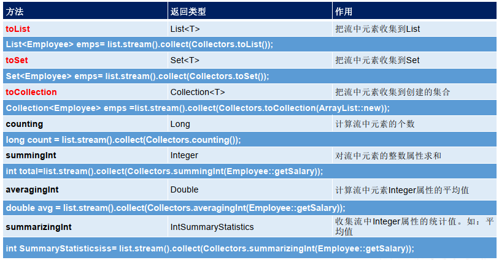
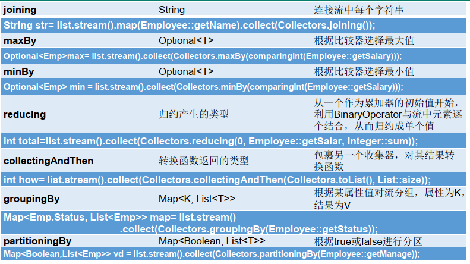
Optional類
為了解決null空指針而生
- 傳統避免空指針，寫一堆判斷
if (xx != null) {... - 就是套一層包裝
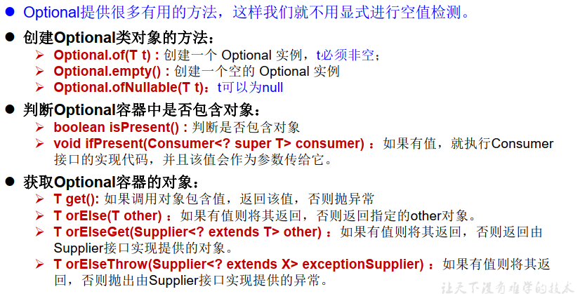
- 最常用的:
Optional.ofNullable(T t):用來裝物件並且可以是nullT orElse(T other):如果是null，則返回備胎(可以做一個預設值)
小結
- Lambda表達式:將函數作為物件
- Stream API:用來計算資料庫數據
- Optional類:避免空指針異常
上次修改於 2021-12-15